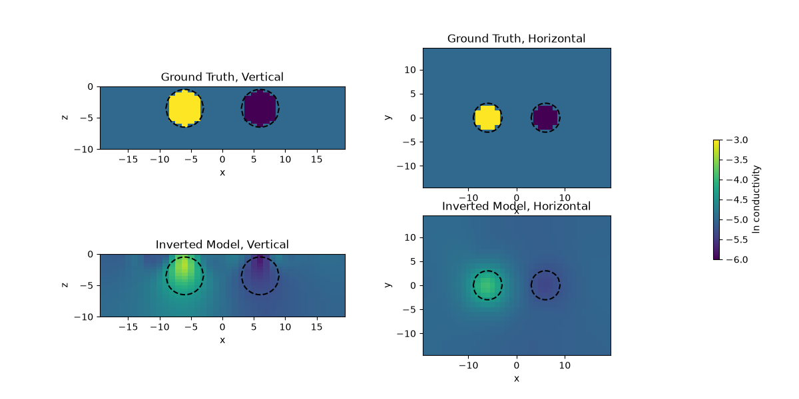

Note
Go to the end to download the full example code.
3D DC inversion of Dipole Dipole array#
This is an example for 3D DC inversion. The model consists of 2 spheres, one conductive, the other one resistive compared to the background.
We restrain the inversion to the Core Mesh through the use an Active Cells mapping that we combine with an exponetial mapping to invert in log conductivity space. Here mapping, \(\mathcal{M}\), indicates transformation of our model to a different space:
\[\sigma = \mathcal{M}(\mathbf{m})\]
Following example will show you how user can implement a 3D DC inversion.
import discretize
from simpeg import (
maps,
utils,
data_misfit,
regularization,
optimization,
inverse_problem,
directives,
inversion,
)
from simpeg.electromagnetics.static import resistivity as DC, utils as DCutils
import numpy as np
import matplotlib.pyplot as plt
np.random.seed(12345)
# 3D Mesh
#########
# Cell sizes
csx, csy, csz = 1.0, 1.0, 0.5
# Number of core cells in each direction
ncx, ncy, ncz = 41, 31, 21
# Number of padding cells to add in each direction
npad = 7
# Vectors of cell lengths in each direction with padding
hx = [(csx, npad, -1.5), (csx, ncx), (csx, npad, 1.5)]
hy = [(csy, npad, -1.5), (csy, ncy), (csy, npad, 1.5)]
hz = [(csz, npad, -1.5), (csz, ncz)]
# Create mesh and center it
mesh = discretize.TensorMesh([hx, hy, hz], x0="CCN")
# 2-spheres Model Creation
# Spheres parameters
x0, y0, z0, r0 = -6.0, 0.0, -3.5, 3.0
x1, y1, z1, r1 = 6.0, 0.0, -3.5, 3.0
# ln conductivity
ln_sigback = -5.0
ln_sigc = -3.0
ln_sigr = -6.0
# Define model
# Background
mtrue = ln_sigback * np.ones(mesh.nC)
# Conductive sphere
csph = (
np.sqrt(
(mesh.gridCC[:, 0] - x0) ** 2.0
+ (mesh.gridCC[:, 1] - y0) ** 2.0
+ (mesh.gridCC[:, 2] - z0) ** 2.0
)
) < r0
mtrue[csph] = ln_sigc * np.ones_like(mtrue[csph])
# Resistive Sphere
rsph = (
np.sqrt(
(mesh.gridCC[:, 0] - x1) ** 2.0
+ (mesh.gridCC[:, 1] - y1) ** 2.0
+ (mesh.gridCC[:, 2] - z1) ** 2.0
)
) < r1
mtrue[rsph] = ln_sigr * np.ones_like(mtrue[rsph])
# Extract Core Mesh
xmin, xmax = -20.0, 20.0
ymin, ymax = -15.0, 15.0
zmin, zmax = -10.0, 0.0
xyzlim = np.r_[[[xmin, xmax], [ymin, ymax], [zmin, zmax]]]
actind, meshCore = utils.mesh_utils.extract_core_mesh(xyzlim, mesh)
# Function to plot cylinder border
def getCylinderPoints(xc, zc, r):
xLocOrig1 = np.arange(-r, r + r / 10.0, r / 10.0)
xLocOrig2 = np.arange(r, -r - r / 10.0, -r / 10.0)
# Top half of cylinder
zLoc1 = np.sqrt(-(xLocOrig1**2.0) + r**2.0) + zc
# Bottom half of cylinder
zLoc2 = -np.sqrt(-(xLocOrig2**2.0) + r**2.0) + zc
# Shift from x = 0 to xc
xLoc1 = xLocOrig1 + xc * np.ones_like(xLocOrig1)
xLoc2 = xLocOrig2 + xc * np.ones_like(xLocOrig2)
topHalf = np.vstack([xLoc1, zLoc1]).T
topHalf = topHalf[0:-1, :]
bottomHalf = np.vstack([xLoc2, zLoc2]).T
bottomHalf = bottomHalf[0:-1, :]
cylinderPoints = np.vstack([topHalf, bottomHalf])
cylinderPoints = np.vstack([cylinderPoints, topHalf[0, :]])
return cylinderPoints
# Setup a synthetic Dipole-Dipole Survey
# Line 1
xmin, xmax = -15.0, 15.0
ymin, ymax = 0.0, 0.0
zmin, zmax = 0, 0
endl = np.array([[xmin, ymin, zmin], [xmax, ymax, zmax]])
survey1 = DCutils.generate_dcip_survey(
endl, "dipole-dipole", dim=mesh.dim, a=3, b=3, n=8
)
# Line 2
xmin, xmax = -15.0, 15.0
ymin, ymax = 5.0, 5.0
zmin, zmax = 0, 0
endl = np.array([[xmin, ymin, zmin], [xmax, ymax, zmax]])
survey2 = DCutils.generate_dcip_survey(
endl, "dipole-dipole", dim=mesh.dim, a=3, b=3, n=8
)
# Line 3
xmin, xmax = -15.0, 15.0
ymin, ymax = -5.0, -5.0
zmin, zmax = 0, 0
endl = np.array([[xmin, ymin, zmin], [xmax, ymax, zmax]])
survey3 = DCutils.generate_dcip_survey(
endl, "dipole-dipole", dim=mesh.dim, a=3, b=3, n=8
)
# Concatenate lines
survey = DC.Survey(survey1.source_list + survey2.source_list + survey3.source_list)
# Setup Problem with exponential mapping and Active cells only in the core mesh
expmap = maps.ExpMap(mesh)
mapactive = maps.InjectActiveCells(mesh=mesh, active_cells=actind, value_inactive=-5.0)
mapping = expmap * mapactive
problem = DC.Simulation3DCellCentered(
mesh, survey=survey, sigmaMap=mapping, bc_type="Neumann"
)
data = problem.make_synthetic_data(mtrue[actind], relative_error=0.05, add_noise=True)
# Least Squares Inversion
# Initial Model
m0 = np.median(ln_sigback) * np.ones(mapping.nP)
# Data Misfit
dmis = data_misfit.L2DataMisfit(simulation=problem, data=data)
# Regularization
regT = regularization.WeightedLeastSquares(
mesh, active_cells=actind, alpha_s=1e-6, alpha_x=1.0, alpha_y=1.0, alpha_z=1.0
)
# Optimization Scheme
opt = optimization.InexactGaussNewton(maxIter=10)
# Form the problem
opt.remember("xc")
invProb = inverse_problem.BaseInvProblem(dmis, regT, opt)
# Directives for Inversions
beta = directives.BetaEstimate_ByEig(beta0_ratio=1.0)
Target = directives.TargetMisfit()
betaSched = directives.BetaSchedule(coolingFactor=5.0, coolingRate=2)
inv = inversion.BaseInversion(invProb, directiveList=[beta, Target, betaSched])
# Run Inversion
minv = inv.run(m0)
# Final Plot
############
fig, ax = plt.subplots(2, 2, figsize=(12, 6))
ax = utils.mkvc(ax)
cyl0v = getCylinderPoints(x0, z0, r0)
cyl1v = getCylinderPoints(x1, z1, r1)
cyl0h = getCylinderPoints(x0, y0, r0)
cyl1h = getCylinderPoints(x1, y1, r1)
clim = [(mtrue[actind]).min(), (mtrue[actind]).max()]
dat = meshCore.plot_slice(
((mtrue[actind])), ax=ax[0], normal="Y", clim=clim, ind=int(ncy / 2)
)
ax[0].set_title("Ground Truth, Vertical")
ax[0].set_aspect("equal")
meshCore.plot_slice((minv), ax=ax[1], normal="Y", clim=clim, ind=int(ncy / 2))
ax[1].set_aspect("equal")
ax[1].set_title("Inverted Model, Vertical")
meshCore.plot_slice(
((mtrue[actind])), ax=ax[2], normal="Z", clim=clim, ind=int(ncz / 2)
)
ax[2].set_title("Ground Truth, Horizontal")
ax[2].set_aspect("equal")
meshCore.plot_slice((minv), ax=ax[3], normal="Z", clim=clim, ind=int(ncz / 2))
ax[3].set_title("Inverted Model, Horizontal")
ax[3].set_aspect("equal")
for i in range(2):
ax[i].plot(cyl0v[:, 0], cyl0v[:, 1], "k--")
ax[i].plot(cyl1v[:, 0], cyl1v[:, 1], "k--")
for i in range(2, 4):
ax[i].plot(cyl1h[:, 0], cyl1h[:, 1], "k--")
ax[i].plot(cyl0h[:, 0], cyl0h[:, 1], "k--")
fig.subplots_adjust(right=0.8)
cbar_ax = fig.add_axes([0.85, 0.15, 0.05, 0.7])
cb = plt.colorbar(dat[0], ax=cbar_ax)
cb.set_label("ln conductivity")
cbar_ax.axis("off")
plt.show()

Running inversion with SimPEG v0.25.2.dev22+g0a002be16
============================ Inexact Gauss Newton ============================
# beta phi_d phi_m f |proj(x-g)-x| LS Comment
-----------------------------------------------------------------------------
0 2.71e+01 4.91e+03 0.00e+00 4.91e+03
1 2.71e+01 6.94e+02 1.36e+01 1.06e+03 1.08e+03 0
2 2.71e+01 5.12e+02 1.83e+01 1.01e+03 9.67e+01 0 Skip BFGS
3 5.43e+00 2.25e+02 4.01e+01 4.43e+02 1.05e+02 0
4 5.43e+00 1.87e+02 4.27e+01 4.19e+02 4.92e+01 0
5 1.09e+00 1.39e+02 5.64e+01 2.00e+02 5.04e+01 0
6 1.09e+00 1.23e+02 6.03e+01 1.88e+02 6.83e+01 0
7 2.17e-01 1.09e+02 6.75e+01 1.23e+02 5.97e+01 0
8 2.17e-01 7.85e+01 9.07e+01 9.82e+01 7.22e+01 0 Skip BFGS
------------------------- STOP! -------------------------
1 : |fc-fOld| = 2.5063e+01 <= tolF*(1+|f0|) = 4.9136e+02
1 : |xc-x_last| = 5.1177e+00 <= tolX*(1+|x0|) = 7.5300e+01
0 : |proj(x-g)-x| = 7.2207e+01 <= tolG = 1.0000e-01
0 : |proj(x-g)-x| = 7.2207e+01 <= 1e3*eps = 1.0000e-02
0 : maxIter = 10 <= iter = 8
------------------------- DONE! -------------------------
Total running time of the script: (1 minutes 24.525 seconds)
Estimated memory usage: 434 MB